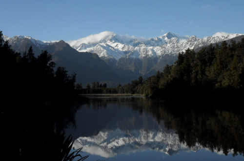
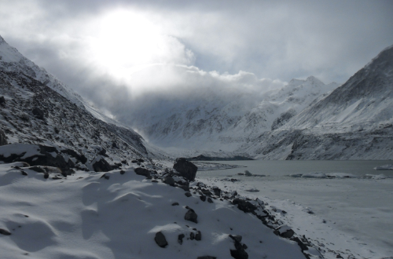

10 Weeks in New Zealand
In my second year in Australia I worked in mining camps. The work was tough and the hours very long but it was worth it when I realised I'd have enough money to travel around New Zealand. I booked a hop-on hop-off tour around both islands and hopped off at pretty much every stop.
My favourite place was Mount Cook even though it snowed the night I arrived and I had to wade through snow (in some places it reached up to my hips) to get a glacier lake the next day.
If you can afford to, you should go. The landscape is so beautiful, I suddenly understood why some people believe in magic.

I practiced:
- hiking, and I loved it
- travelling and organizing my travels
- flexibility
- intercultural communication skills

I learned:
- how to pronounce the word 'Maori'
- the value of quality clothing
- to ask when I'm not sure
- I HATE playing games while travelling
- that someone has to go first and you never know who'll follow in your footsteps. So plough on!
- hop-on hop-off tours around countries are not my thing
- sea-sickness is so much worse in small boats, so no more kayaking
- complete and utter darkness, especially with it's coupled with ominous noises, is terrifying!